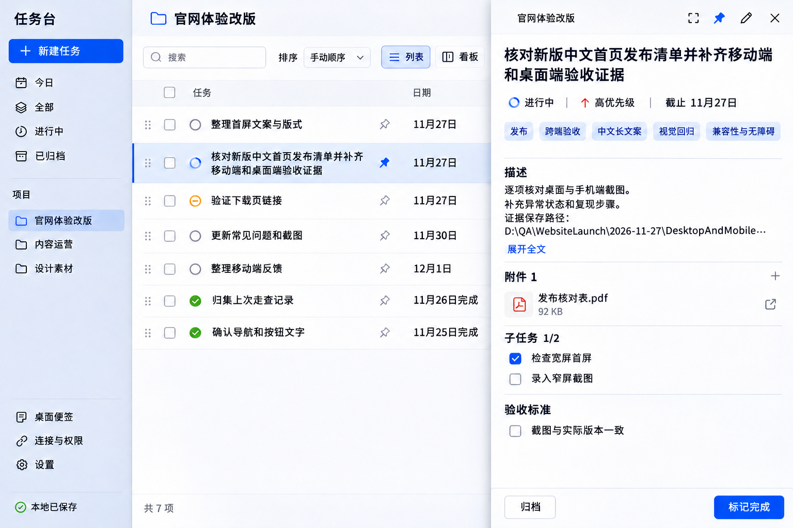
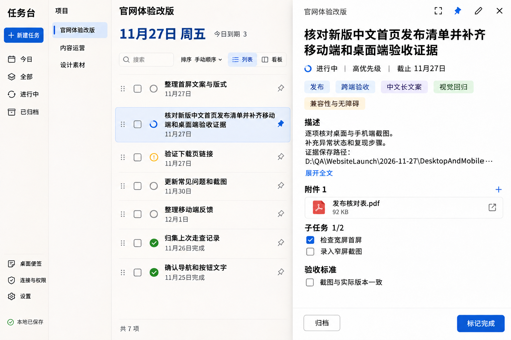
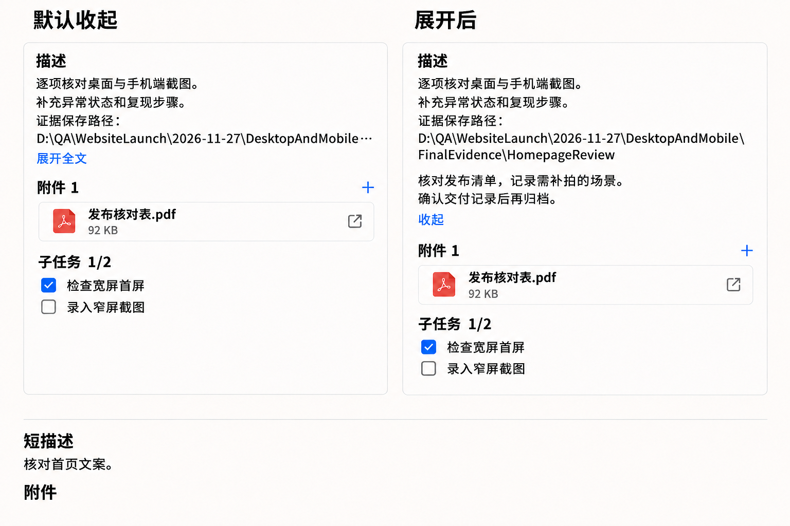

项目列表与任务详情重设计
同为 1536 × 1024 的「官网体验改版」项目。七条任务采用相同的手动顺序，打开同一条进行中、已置顶的长标题任务。点击图稿可查看原尺寸。
11 月 27 日已选快速扫读方向，以用户附图为实现基准。状态和优先级可在详情中直接修改。打开确认附图 · 打开实际实现对照

候选图稿


A · 快速扫读
导航集中在同一个栏内，任务状态和日期沿列对齐。选中行用靠左的蓝线标记，较窄的详情给列表留出更多横向空间。


B · 今日专注
常用入口和项目分栏，日期与今日到期数放在项目标题下。每行留出两层信息，选中行有浅蓝色描边，详情标题与正文有更长的行宽。
长描述折叠

- 按面板当前宽度显示前四个实际排版行。原有换行保留，长路径可以换行，实际超过四行才出现「展开全文」。
- 点击后原地显示全文，「收起」回到四行。收起时附件与子任务随正文上移，短描述自然显示。
- 切换任务时回到默认状态。同一任务在后台刷新时保留阅读状态，窄面板和全宽详情都按各自宽度重算是否溢出。
- 编辑器可编辑全文。数据库和 MCP 继续保留原文。
查看样例原文
逐项核对桌面与手机端截图。 补充异常状态和复现步骤。 证据保存路径： D:\QA\WebsiteLaunch\2026-11-27\DesktopAndMobile\FinalEvidence\HomepageReview 核对发布清单，记录需补拍的场景。 确认交付记录后再归档。
短描述样例「核对首页文案。」
操作与验收
实现按确认附图延展看板、编辑器、桌面便签和设置。候选稿 B 的日期栏保留作历史对照。
| 场景 | 选稿后的实现核对 |
|---|---|
| 打开详情 | 右侧固定覆盖，工作区宽度不变。外露列表仍可滚动，点外侧关闭详情时底下的动作不会触发。 |
| 标题、标签和日期 | 窄窗长标题可换行，展开、置顶、编辑和关闭可达。多标签不溢出。进行中显示截止日期，完成行显示完成日期。 |
| 长短描述 | 在常用与较窄视口下核对默认宽度和全宽详情，覆盖四行、恰好溢出、展开、收起、切换任务和同任务刷新。比较收起前后的附件与子任务位置。 |
| 任务操作 | 列表多选和完成独立。头部与底部固定，各动作可达。未确认的验收项继续阻止完成，附件可从详情打开。 |
来源与旧稿
- 用状态、标题和日期的列对齐提高清单扫读速度，工具放在列表上方。Linear · My Issues · Display options
- 用日期建立当天的上下文，给正在读的任务留出空间。Things · Today and This Evening
轮廓对照

历次图稿与生成记录
- 设计简报和虚构任务清单 · 出图提示词和版本
- A v0.1 初稿 · v0.2 只读元数据
- B v0.1 初稿
- 局部对照 v0.1